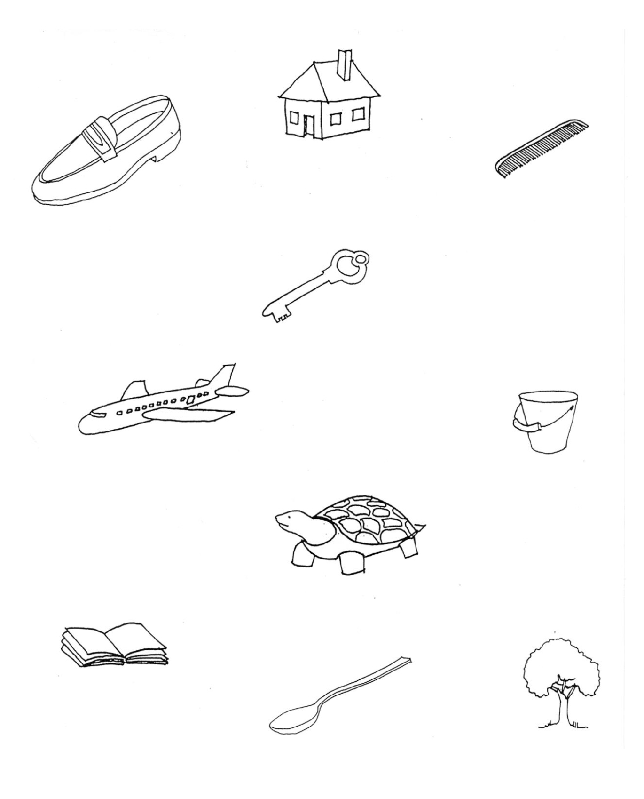
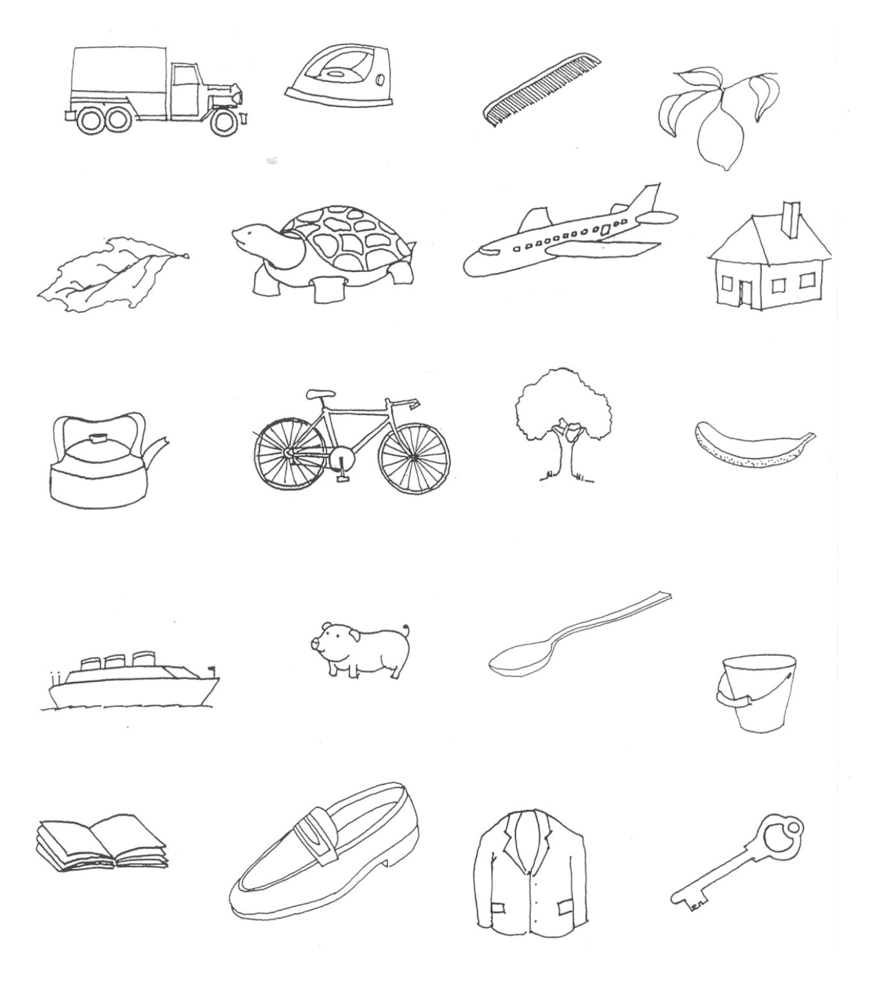

<!DOCTYPE html>
<html lang="pt-BR">
<head>
    <meta charset="UTF-8">
    <meta name="viewport" content="width=device-width, initial-scale=1.0">
    <title>BBRC Digital</title>
    <script src="https://cdn.tailwindcss.com"></script>
    <script crossorigin src="https://unpkg.com/react@18/umd/react.production.min.js"></script>
    <script crossorigin src="https://unpkg.com/react-dom@18/umd/react-dom.production.min.js"></script>
    <script src="https://unpkg.com/@babel/standalone/babel.min.js"></script>
    <style>
        body { background-color: #f1f5f9; margin: 0; }
        @media print { .no-print { display: none !important; } body { background-color: white; } }
        @keyframes pulse-ring { 0% { transform: scale(0.8); opacity: 1; } 100% { transform: scale(1.4); opacity: 0; } }
        .mic-pulse::before { content:''; position:absolute; inset:-6px; border-radius:50%; border:3px solid #ef4444; animation: pulse-ring 1.2s ease-out infinite; }
        canvas.clock-canvas { touch-action: none; }
    </style>
</head>
<body>
    <div id="root"></div>
    <script type="text/babel">
        const { useState, useEffect, useRef, useCallback, useMemo } = React;

        /* ==========================================================
           BBRC Digital — Bateria Breve de Rastreio Cognitivo
           Reescrita completa com lógica fiel ao protocolo clínico.

           Protocolo de aplicação:
           1. Nomeação (mostrar 10 figuras, paciente nomeia)
           2. Memória Incidental (esconder figuras, evocar)
           3. Memória Imediata — Exposição 30s + Evocação
           4. Aprendizado — Exposição 30s + Evocação
           5. Fluência Verbal (animais, 1 minuto)
           6. Teste do Relógio (desenho 11h10, Shulman 0-5)
           7. Memória Tardia (evocação após ~5min de interferência)
           8. Reconhecimento (20 figuras: 10 alvo + 10 distratoras)
           9. Relatório
        ========================================================== */

        /* ===== CONSTANTES ===== */

        const TARGET_FIGURES = ["sapato","casa","pente","chave","aviao","balde","tartaruga","livro","colher","arvore"];

        // Sinônimos e variações aceitas para cada figura-alvo
        const FIGURE_SYNONYMS = {
            "sapato": ["sapato","sapatos","calcado","tenis","bota"],
            "casa": ["casa","casinha","lar","moradia"],
            "pente": ["pente","pentinho","escova"],
            "chave": ["chave","chavinha","chaves"],
            "aviao": ["aviao","aviaozinho","aeronave","avioes"],
            "balde": ["balde","baldinho","bacia"],
            "tartaruga": ["tartaruga","tartaruguinha","jabuti","cagado"],
            "livro": ["livro","livrinho","caderno","livros"],
            "colher": ["colher","colherzinha","talher"],
            "arvore": ["arvore","arvorezinha","arvores","planta"]
        };

        // Lista expandida de animais em português
        const ANIMAL_LIST = [
            "cachorro","gato","cavalo","vaca","boi","elefante","leao","tigre","onca","macaco",
            "girafa","jacare","cobra","passaro","galinha","galo","pato","ganso","rato","camundongo",
            "coelho","peixe","baleia","tubarao","golfinho","urso","lobo","raposa","porco","ovelha",
            "cabra","bode","zebra","rinoceronte","hipopotamo","aguia","falcao","papagaio","arara",
            "tucano","pinguim","foca","lontra","tamandua","tatu","capivara","anta","veado","bufalo",
            "jumento","burro","mula","egua","cao","felino","ave","inseto","formiga","abelha","mosca",
            "borboleta","mosquito","barata","aranha","sapo","ra","lagarto","lagartixa","tartaruga",
            "pombo","coruja","periquito","canario","codorna","cisne","flamingo","peru","grilo",
            "camarao","lagosta","caranguejo","polvo","sardinha","salmao","gorila","camelo","preguica",
            "cervo","iguana","camaleao","lula","caracol","lesma","gaviao","besouro","escorpiao",
            "pantera","leopardo","chita","guepardo","hiena","canguru","coala","ornitorrinco",
            "castor","texugo","doninha","furão","gambá","esquilo","hamster","porquinho","chinchila",
            "panda","lhama","alpaca","dromedario","iaque","bisao","alce","rena","antilope",
            "gazela","gnu","javali","suricato","mangusto","lince","jaguatirica","gato-do-mato",
            "tamanduai","bicho-preguica","mico","sagui","orangotango","chimpanze","bonobo","gibao",
            "mandril","babuino","lori","lemure","corvo","gaivota","pelicano","cegonha","garça",
            "colibri","beija-flor","andorinha","pardal","sabia","bem-te-vi","cardeal","rouxinol",
            "pavao","avestruz","ema","kiwi","urubu","condor","harpia","crocodilo","iguana",
            "salamandra","triton","camelao","piton","jiboia","sucuri","cascavel","naja","mamba",
            "calango","gecko","dragao-de-komodo","perereca","piranha","bagre","tilapia","truta",
            "atum","bacalhau","robalo","dourado","pacu","pintado","surubim","lambari","cavalo-marinho",
            "agua-viva","estrela-do-mar","ourico-do-mar","coral","esponja","mexilhao","ostra",
            "lula","nautilo","centopeia","lacraia","louva-deus","cigarra","libélula","joaninha",
            "vespa","marimbondo","cupim","piolho","pulga","carrapato","acaro","minhoca","sanguessuga",
            "lombriga","tenia","bicho","animal","bichano","mascote","cadelinha","gatinho","potro",
            "bezerra","novilha","touro","carneiro","cordeiro","leitao","cabrito","filhote",
            "papagaio","maritaca","calopsita","cacatua","agapornis","jabiru","tuiuiu"
        ];
        const ANIMAL_SET = new Set(ANIMAL_LIST.map(a => normalize(a)));

        const PHASES = {
            WELCOME: 'welcome',
            NAMING: 'naming',
            INCIDENTAL: 'incidental',
            IMMEDIATE_SHOW: 'immediate_show',
            IMMEDIATE_RECALL: 'immediate_recall',
            LEARNING_SHOW: 'learning_show',
            LEARNING_RECALL: 'learning_recall',
            FLUENCY: 'fluency',
            CLOCK: 'clock',
            DELAYED: 'delayed',
            RECOGNITION: 'recognition',
            REPORT: 'report'
        };

        const PHASE_ORDER = [
            PHASES.WELCOME, PHASES.NAMING, PHASES.INCIDENTAL,
            PHASES.IMMEDIATE_SHOW, PHASES.IMMEDIATE_RECALL,
            PHASES.LEARNING_SHOW, PHASES.LEARNING_RECALL,
            PHASES.FLUENCY, PHASES.CLOCK,
            PHASES.DELAYED, PHASES.RECOGNITION, PHASES.REPORT
        ];

        // Instruções faladas UMA VEZ ao entrar na fase
        const PHASE_INSTRUCTIONS = {
            [PHASES.WELCOME]: "Bem-vindo à Bateria Breve de Rastreio Cognitivo. Vou mostrar algumas figuras e fazer algumas perguntas. Certifique-se de que está em um local silencioso e permita acesso ao microfone.",
            [PHASES.NAMING]: "Que figuras são estas? Diga o nome de cada uma delas em voz alta.",
            [PHASES.INCIDENTAL]: "Agora, sem olhar, diga quais figuras eu acabei de lhe mostrar. Diga todas as que você lembrar.",
            [PHASES.IMMEDIATE_SHOW]: "Olhe novamente estas figuras e tente decorá-las. Você terá 30 segundos.",
            [PHASES.IMMEDIATE_RECALL]: "Agora diga quais figuras você lembra.",
            [PHASES.LEARNING_SHOW]: "Vou mostrar as figuras mais uma vez por 30 segundos. Tente guardar todas na memória.",
            [PHASES.LEARNING_RECALL]: "Diga novamente quais figuras você lembra.",
            [PHASES.FLUENCY]: "Agora você terá um minuto para dizer o maior número possível de nomes de animais. Quando estiver pronto, clique em Começar.",
            [PHASES.CLOCK]: "Agora, desenhe um relógio grande, coloque todos os números, e marque onze horas e dez minutos.",
            [PHASES.DELAYED]: "Lembra das figuras que eu mostrei antes? Diga todas as que você lembrar.",
            [PHASES.RECOGNITION]: "Olhe para estas figuras. Diga quais delas faziam parte daquele primeiro grupo que eu mostrei."
        };

        const SHULMAN_CRITERIA = [
            { score: 5, label: "Relógio perfeito" },
            { score: 4, label: "Mínimo erro visuoespacial" },
            { score: 3, label: "Representação inadequada do horário 11:10, sem grande alteração visuoespacial" },
            { score: 2, label: "Erro visuoespacial moderado, impossibilitando indicação dos ponteiros" },
            { score: 1, label: "Grande desorganização visuoespacial" },
            { score: 0, label: "Incapacidade de representar qualquer imagem de relógio" }
        ];

        /* ===== NORMALIZAÇÃO DE TEXTO ===== */

        function normalize(text) {
            return text.toLowerCase()
                .normalize('NFD').replace(/[\u0300-\u036f]/g, '')
                .replace(/[^\w\s]/g, '')
                .trim();
        }

        /* ===== PONTUAÇÃO: FIGURAS-ALVO ===== */

        function matchTargetFigures(text) {
            if (!text || !text.trim()) return { count: 0, found: [], intrusions: [] };
            const words = normalize(text).split(/\s+/);
            const found = new Set();
            const intrusions = [];

            // Tentar agrupar bigrams também (ex: "bicho preguica" → não aplica aqui, mas previne problemas)
            const allTokens = [...words];
            for (let i = 0; i < words.length - 1; i++) {
                allTokens.push(words[i] + ' ' + words[i+1]);
            }

            allTokens.forEach(token => {
                let matched = false;
                for (const [figure, synonyms] of Object.entries(FIGURE_SYNONYMS)) {
                    const normalizedSynonyms = synonyms.map(s => normalize(s));
                    if (normalizedSynonyms.includes(normalize(token))) {
                        found.add(figure);
                        matched = true;
                        break;
                    }
                }
                // Não contar intrusões para bigrams ou palavras comuns/conectivos
                if (!matched && token.length > 2 && !token.match(/^(que|uma|um|de|do|da|os|as|no|na|tem|the|e|ou|com|por|para|esse|essa|este|esta|aquele|aquela|mais|foi|era|ser|ter|sim|nao|ai|ah|hum|entao|tipo|assim|la|ca|bem|bom|depois|antes|agora|muito|pouco)$/)) {
                    if (!token.includes(' ')) intrusions.push(token);
                }
            });

            return { count: found.size, found: Array.from(found), intrusions };
        }

        /* ===== PONTUAÇÃO: ANIMAIS ===== */

        function matchAnimals(text) {
            if (!text || !text.trim()) return { count: 0, found: [], invalid: [] };
            const words = normalize(text).split(/\s+/);
            const found = new Set();
            const invalid = [];

            // Bigrams para animais compostos
            const allTokens = [...words];
            for (let i = 0; i < words.length - 1; i++) {
                allTokens.push(words[i] + '-' + words[i+1]);
                allTokens.push(words[i] + words[i+1]);
            }

            allTokens.forEach(token => {
                const norm = normalize(token);
                if (ANIMAL_SET.has(norm) && !found.has(norm)) {
                    found.add(norm);
                }
            });

            return { count: found.size, found: Array.from(found), invalid };
        }

        /* ===== VOZ SINTÉTICA (TTS) ===== */

        let bestVoice = null;
        let voicesLoaded = false;

        function loadVoices() {
            const voices = window.speechSynthesis.getVoices();
            if (voices.length === 0) return;
            voicesLoaded = true;
            const ptBR = voices.filter(v => v.lang && (v.lang.startsWith('pt-BR') || v.lang.startsWith('pt_BR')));
            const pt = voices.filter(v => v.lang && v.lang.startsWith('pt'));
            // Prioridade: Google PT-BR > vozes premium/naturais > qualquer pt-BR > qualquer pt
            bestVoice = ptBR.find(v => /google/i.test(v.name)) ||
                        pt.find(v => /google/i.test(v.name)) ||
                        ptBR.find(v => /luciana|fernanda|premium|enhanced|natural|neural/i.test(v.name)) ||
                        ptBR[0] || pt[0] || null;
        }

        loadVoices();
        if (window.speechSynthesis.onvoiceschanged !== undefined) {
            window.speechSynthesis.onvoiceschanged = loadVoices;
        }

        function speakText(text, onEnd) {
            return new Promise((resolve) => {
                window.speechSynthesis.cancel();
                if (!text) { resolve(); if (onEnd) onEnd(); return; }
                const u = new SpeechSynthesisUtterance(text);
                u.lang = 'pt-BR';
                if (bestVoice) u.voice = bestVoice;
                u.rate = 0.92;
                u.pitch = 1.0;
                u.volume = 1.0;
                u.onend = () => { resolve(); if (onEnd) onEnd(); };
                u.onerror = () => { resolve(); if (onEnd) onEnd(); };
                window.speechSynthesis.speak(u);
            });
        }

        function stopSpeaking() {
            window.speechSynthesis.cancel();
        }

        /* ===== ANÁLISE DO RELÓGIO (Canvas heurística melhorada) ===== */

        function analyzeClockDrawing(canvas) {
            const ctx = canvas.getContext('2d');
            const w = canvas.width, h = canvas.height;
            const imgData = ctx.getImageData(0, 0, w, h);
            const data = imgData.data;

            const cx = w / 2, cy = h / 2;
            const maxR = Math.min(cx, cy) * 0.95;

            // Conta pixels não-brancos (com conteúdo)
            let totalInk = 0;
            let pixelsByDistance = new Array(20).fill(0); // bins de distância
            const quadrants = [0, 0, 0, 0]; // TR, TL, BL, BR
            let topHalf = 0, bottomHalf = 0;
            let centerArea = 0; // pixels perto do centro (ponteiros?)
            let hasContent = false;

            for (let y = 0; y < h; y++) {
                for (let x = 0; x < w; x++) {
                    const idx = (y * w + x) * 4;
                    const r = data[idx], g = data[idx+1], b = data[idx+2], a = data[idx+3];
                    // Pixel com tinta = não branco com alguma opacidade
                    if (a > 30 && (r < 240 || g < 240 || b < 240)) {
                        totalInk++;
                        hasContent = true;
                        const dx = x - cx, dy = y - cy;
                        const dist = Math.sqrt(dx * dx + dy * dy);
                        const normDist = dist / maxR;
                        const bin = Math.min(19, Math.floor(normDist * 20));
                        pixelsByDistance[bin]++;

                        // Quadrantes
                        if (dist > maxR * 0.3 && dist < maxR * 1.1) {
                            if (dx >= 0 && dy < 0) quadrants[0]++;  // top-right
                            else if (dx < 0 && dy < 0) quadrants[1]++; // top-left
                            else if (dx < 0 && dy >= 0) quadrants[2]++; // bottom-left
                            else quadrants[3]++; // bottom-right
                        }

                        if (dy < 0) topHalf++;
                        else bottomHalf++;

                        if (dist < maxR * 0.35) centerArea++;
                    }
                }
            }

            // Sem desenho
            if (!hasContent || totalInk < 80) {
                return { score: 0, reason: "Nenhum desenho detectado ou desenho insuficiente." };
            }

            // Muito pouco conteúdo
            if (totalInk < 400) {
                return { score: 1, reason: "Desenho muito escasso, grande desorganização." };
            }

            // Análise de circularidade: pixels na "borda" do relógio (60-90% do raio)
            const ringPixels = pixelsByDistance.slice(10, 18).reduce((a, b) => a + b, 0);
            const innerPixels = pixelsByDistance.slice(0, 8).reduce((a, b) => a + b, 0);
            const outerPixels = pixelsByDistance.slice(18).reduce((a, b) => a + b, 0);

            const ringRatio = ringPixels / totalInk;
            const innerRatio = innerPixels / totalInk;
            const outerRatio = outerPixels / totalInk;

            // Balanceamento dos quadrantes (números distribuídos uniformemente?)
            const minQ = Math.min(...quadrants);
            const maxQ = Math.max(...quadrants);
            const quadBalance = maxQ > 0 ? minQ / maxQ : 0;

            // Balanceamento topo/base
            const vertBalance = (topHalf + bottomHalf) > 0 ? Math.min(topHalf, bottomHalf) / Math.max(topHalf, bottomHalf) : 0;

            // Centro tem tinta? (indica ponteiros)
            const centerRatio = centerArea / totalInk;
            const hasPointers = centerRatio > 0.05 && innerRatio > 0.15;

            // Scoring heurístico
            let score = 0;
            let reason = "";

            if (outerRatio > 0.35) {
                score = 1;
                reason = "Muitos traços fora da área esperada do relógio. Grande desorganização visuoespacial.";
            } else if (ringRatio < 0.15 && quadBalance < 0.1) {
                score = 2;
                reason = "Estrutura circular pouco definida. Erro visuoespacial moderado.";
            } else if (ringRatio >= 0.2 && quadBalance >= 0.25 && hasPointers && vertBalance > 0.35) {
                // Bom círculo, boa distribuição, ponteiros detectados
                if (quadBalance > 0.45 && vertBalance > 0.5 && ringRatio > 0.25) {
                    score = 5;
                    reason = "Boa estrutura circular, números distribuídos uniformemente, ponteiros detectados. Relógio aparentemente correto.";
                } else {
                    score = 4;
                    reason = "Boa estrutura circular com números distribuídos e ponteiros detectados. Mínimo erro visuoespacial.";
                }
            } else if (ringRatio >= 0.15 && quadBalance >= 0.15) {
                if (hasPointers) {
                    score = 3;
                    reason = "Estrutura circular reconhecível com ponteiros, mas possível representação inadequada do horário.";
                } else {
                    score = 3;
                    reason = "Estrutura circular reconhecível, mas ponteiros não claramente identificados.";
                }
            } else if (ringRatio >= 0.1) {
                score = 2;
                reason = "Estrutura parcialmente reconhecível. Erro visuoespacial moderado.";
            } else {
                score = 1;
                reason = "Desenho com grande desorganização visuoespacial.";
            }

            return { score, reason };
        }

        /* ===== ÍCONES SVG ===== */

        const Icon = ({ children, size = 24, className = "", ...props }) => (
            <svg xmlns="http://www.w3.org/2000/svg" width={size} height={size} viewBox="0 0 24 24"
                 fill="none" stroke="currentColor" strokeWidth="2" strokeLinecap="round"
                 strokeLinejoin="round" className={className} {...props}>{children}</svg>
        );
        const MicIcon = (p) => <Icon {...p}><path d="M12 1a3 3 0 0 0-3 3v8a3 3 0 0 0 6 0V4a3 3 0 0 0-3-3z"/><path d="M19 10v2a7 7 0 0 1-14 0v-2"/><line x1="12" y1="19" x2="12" y2="23"/><line x1="8" y1="23" x2="16" y2="23"/></Icon>;
        const MicOffIcon = (p) => <Icon {...p}><line x1="1" y1="1" x2="23" y2="23"/><path d="M9 9v3a3 3 0 0 0 5.12 2.12"/><line x1="15" y1="9.34" x2="15" y2="4a3 3 0 0 0-5.94-.6"/><path d="M17 16.95A7 7 0 0 1 5 12v-2"/><line x1="12" y1="19" x2="12" y2="23"/><line x1="8" y1="23" x2="16" y2="23"/></Icon>;
        const PlayIcon = (p) => <Icon {...p}><polygon points="5 3 19 12 5 21 5 3"/></Icon>;
        const SaveIcon = (p) => <Icon {...p}><path d="M19 21H5a2 2 0 0 1-2-2V5a2 2 0 0 1 2-2h11l5 5v11a2 2 0 0 1-2 2z"/><polyline points="17 21 17 13 7 13 7 21"/><polyline points="7 3 7 8 15 8"/></Icon>;
        const UndoIcon = (p) => <Icon {...p}><path d="M1 4v6h6"/><path d="M3.51 15a9 9 0 1 0 2.13-9.36L1 10"/></Icon>;
        const CheckIcon = (p) => <Icon {...p}><path d="M22 11.08V12a10 10 0 1 1-5.93-9.14"/><polyline points="22 4 12 14.01 9 11.01"/></Icon>;
        const AlertIcon = (p) => <Icon {...p}><circle cx="12" cy="12" r="10"/><line x1="12" y1="8" x2="12" y2="12"/><line x1="12" y1="16" x2="12.01" y2="16"/></Icon>;
        const ClockIcon = (p) => <Icon {...p}><circle cx="12" cy="12" r="10"/><polyline points="12 6 12 12 16 14"/></Icon>;
        const BrainIcon = (p) => <Icon {...p}><path d="M9.5 2A2.5 2.5 0 0 1 12 4.5v15a2.5 2.5 0 0 1-4.96.44 2.5 2.5 0 0 1-2.96-3.08 3 3 0 0 1-.34-5.58 2.5 2.5 0 0 1 1.32-4.24 2.5 2.5 0 0 1 1.98-3A2.5 2.5 0 0 1 9.5 2Z"/><path d="M14.5 2A2.5 2.5 0 0 0 12 4.5v15a2.5 2.5 0 0 0 4.96.44 2.5 2.5 0 0 0 2.96-3.08 3 3 0 0 0 .34-5.58 2.5 2.5 0 0 0-1.32-4.24 2.5 2.5 0 0 0-1.98-3A2.5 2.5 0 0 0 14.5 2Z"/></Icon>;
        const PrintIcon = (p) => <Icon {...p}><path d="M14.5 2H6a2 2 0 0 0-2 2v16a2 2 0 0 0 2 2h12a2 2 0 0 0 2-2V7.5L14.5 2z"/><polyline points="14 2 14 8 20 8"/><line x1="16" y1="13" x2="8" y2="13"/><line x1="16" y1="17" x2="8" y2="17"/></Icon>;
        const EyeIcon = (p) => <Icon {...p}><path d="M1 12s4-8 11-8 11 8 11 8-4 8-11 8-11-8-11-8z"/><circle cx="12" cy="12" r="3"/></Icon>;
        const EyeOffIcon = (p) => <Icon {...p}><path d="M17.94 17.94A10.07 10.07 0 0 1 12 20c-7 0-11-8-11-8a18.45 18.45 0 0 1 5.06-5.94"/><line x1="1" y1="1" x2="23" y2="23"/></Icon>;

        /* ===== HOOK: PERMISSÃO DO MICROFONE ===== */

        // Estados possíveis: 'checking' | 'granted' | 'denied' | 'prompt' | 'unsupported'
        function useMicrophonePermission() {
            const [micPermission, setMicPermission] = useState('checking');
            const streamRef = useRef(null);

            // Verificar estado inicial da permissão
            useEffect(() => {
                const SR = window.SpeechRecognition || window.webkitSpeechRecognition;
                if (!SR || !navigator.mediaDevices || !navigator.mediaDevices.getUserMedia) {
                    setMicPermission('unsupported');
                    return;
                }

                // Usar Permissions API se disponível para checar sem popup
                if (navigator.permissions && navigator.permissions.query) {
                    navigator.permissions.query({ name: 'microphone' })
                        .then(result => {
                            setMicPermission(result.state); // 'granted' | 'denied' | 'prompt'
                            result.onchange = () => {
                                setMicPermission(result.state);
                            };
                        })
                        .catch(() => {
                            // Permissions API não suporta microphone em alguns browsers
                            setMicPermission('prompt');
                        });
                } else {
                    setMicPermission('prompt');
                }
            }, []);

            // Solicitar permissão ativamente via getUserMedia
            const requestPermission = useCallback(async () => {
                try {
                    // Liberar stream anterior se houver
                    if (streamRef.current) {
                        streamRef.current.getTracks().forEach(t => t.stop());
                        streamRef.current = null;
                    }
                    const stream = await navigator.mediaDevices.getUserMedia({ audio: true });
                    streamRef.current = stream;
                    // Parar o stream imediatamente — só precisamos da permissão
                    stream.getTracks().forEach(t => t.stop());
                    streamRef.current = null;
                    setMicPermission('granted');
                    return true;
                } catch (err) {
                    console.warn('Microphone permission denied:', err.name, err.message);
                    if (err.name === 'NotAllowedError' || err.name === 'PermissionDeniedError') {
                        setMicPermission('denied');
                    } else if (err.name === 'NotFoundError') {
                        setMicPermission('unsupported');
                    } else {
                        setMicPermission('denied');
                    }
                    return false;
                }
            }, []);

            return { micPermission, requestPermission };
        }

        /* ===== HOOK: RECONHECIMENTO DE VOZ ===== */

        function useSpeechRecognition() {
            const recRef = useRef(null);
            const [isListening, setIsListening] = useState(false);
            const [transcript, setTranscript] = useState('');
            const [micError, setMicError] = useState(null); // null | 'not-allowed' | 'unsupported' | 'error'
            const isActiveRef = useRef(false);
            const restartTimeoutRef = useRef(null);

            useEffect(() => {
                const SR = window.SpeechRecognition || window.webkitSpeechRecognition;
                if (!SR) {
                    setMicError('unsupported');
                    return;
                }

                const rec = new SR();
                rec.continuous = true;
                rec.interimResults = true;
                rec.lang = 'pt-BR';
                rec.maxAlternatives = 3;

                rec.onresult = (ev) => {
                    let finalText = '';
                    for (let i = 0; i < ev.results.length; i++) {
                        if (ev.results[i].isFinal) {
                            finalText += ev.results[i][0].transcript + ' ';
                        }
                    }
                    if (finalText.trim()) {
                        setTranscript(prev => {
                            const combined = (prev + ' ' + finalText).trim();
                            return combined;
                        });
                    }
                };

                rec.onerror = (ev) => {
                    if (ev.error === 'aborted') return;
                    if (ev.error === 'no-speech') return;
                    if (ev.error === 'not-allowed') {
                        setMicError('not-allowed');
                        isActiveRef.current = false;
                        setIsListening(false);
                        return;
                    }
                    if (ev.error === 'service-not-allowed') {
                        setMicError('not-allowed');
                        isActiveRef.current = false;
                        setIsListening(false);
                        return;
                    }
                    console.warn('Speech recognition error:', ev.error);
                    setMicError('error');
                };

                rec.onend = () => {
                    // Auto-restart if still supposed to be listening
                    if (isActiveRef.current) {
                        if (restartTimeoutRef.current) clearTimeout(restartTimeoutRef.current);
                        restartTimeoutRef.current = setTimeout(() => {
                            if (isActiveRef.current && recRef.current) {
                                try { recRef.current.start(); } catch(e) {}
                            }
                        }, 300);
                    }
                };

                recRef.current = rec;

                return () => {
                    isActiveRef.current = false;
                    if (restartTimeoutRef.current) clearTimeout(restartTimeoutRef.current);
                    try { rec.stop(); } catch(e) {}
                };
            }, []);

            const startListening = useCallback(() => {
                if (!recRef.current || isActiveRef.current) return;
                setMicError(null); // Limpar erro anterior
                isActiveRef.current = true;
                setIsListening(true);
                // Pequeno delay para evitar conflito com TTS
                setTimeout(() => {
                    if (isActiveRef.current && recRef.current) {
                        try { recRef.current.start(); } catch(e) {
                            console.warn('Failed to start recognition:', e);
                        }
                    }
                }, 400);
            }, []);

            const stopListening = useCallback(() => {
                isActiveRef.current = false;
                setIsListening(false);
                if (restartTimeoutRef.current) clearTimeout(restartTimeoutRef.current);
                if (recRef.current) {
                    try { recRef.current.stop(); } catch(e) {}
                }
            }, []);

            const resetTranscript = useCallback(() => {
                setTranscript('');
            }, []);

            const clearError = useCallback(() => {
                setMicError(null);
            }, []);

            return { isListening, transcript, micError, startListening, stopListening, resetTranscript, setTranscript, clearError };
        }

        /* ===== COMPONENTE: BANNER DE ERRO DE MICROFONE ===== */

        function MicPermissionBanner({ micPermission, micError, onRequestPermission }) {
            // Mostrar se permissão negada ou erro de mic
            const showDenied = micPermission === 'denied' || micError === 'not-allowed';
            const showUnsupported = micPermission === 'unsupported' || micError === 'unsupported';

            if (!showDenied && !showUnsupported) return null;

            return (
                <div className={`w-full max-w-2xl mx-auto mb-4 p-4 rounded-lg border-2 ${showUnsupported ? 'bg-gray-50 border-gray-300' : 'bg-red-50 border-red-300'}`}>
                    <div className="flex items-start gap-3">
                        <MicOffIcon size={24} className={showUnsupported ? 'text-gray-500 mt-0.5' : 'text-red-500 mt-0.5'} />
                        <div className="flex-1">
                            {showUnsupported ? (
                                <>
                                    <h4 className="font-bold text-gray-700 text-sm">Navegador Incompatível</h4>
                                    <p className="text-gray-600 text-xs mt-1">
                                        Seu navegador não suporta reconhecimento de voz. Use <strong>Google Chrome</strong> ou <strong>Microsoft Edge</strong> para realizar o teste.
                                    </p>
                                </>
                            ) : (
                                <>
                                    <h4 className="font-bold text-red-700 text-sm">Microfone Bloqueado</h4>
                                    <p className="text-red-600 text-xs mt-1">
                                        O acesso ao microfone foi negado. O teste precisa do microfone para funcionar.
                                    </p>
                                    <ul className="text-red-600 text-xs mt-2 space-y-1 list-disc list-inside">
                                        <li>Clique no ícone de cadeado ou câmera na barra de endereço do navegador</li>
                                        <li>Altere a permissão do microfone para "Permitir"</li>
                                        <li>Recarregue a página se necessário</li>
                                    </ul>
                                    <button onClick={onRequestPermission}
                                        className="mt-3 px-4 py-2 bg-red-600 text-white rounded-lg font-bold text-xs hover:bg-red-700 transition-colors flex items-center gap-2">
                                        <MicIcon size={14}/> Tentar Habilitar Microfone
                                    </button>
                                </>
                            )}
                        </div>
                    </div>
                </div>
            );
        }

        /* ===== COMPONENTE: CAIXA DE VOZ ===== */

        function VoiceBox({ isListening, transcript, hint, micError, onRequestPermission }) {
            const hasError = micError === 'not-allowed' || micError === 'unsupported';

            return (
                <div className="w-full max-w-lg mx-auto">
                    {/* Aviso inline se erro de mic */}
                    {hasError && (
                        <div className="mb-2 p-3 bg-red-50 border border-red-200 rounded-lg flex items-center gap-2">
                            <MicOffIcon size={16} className="text-red-500 flex-shrink-0"/>
                            <span className="text-red-600 text-xs flex-1">
                                {micError === 'unsupported'
                                    ? 'Navegador não suporta reconhecimento de voz.'
                                    : 'Microfone bloqueado. Permita o acesso ao microfone para continuar.'}
                            </span>
                            {micError === 'not-allowed' && onRequestPermission && (
                                <button onClick={onRequestPermission}
                                    className="px-3 py-1 bg-red-600 text-white rounded text-xs font-bold hover:bg-red-700 flex-shrink-0">
                                    Habilitar
                                </button>
                            )}
                        </div>
                    )}
                    <div className={`p-4 rounded-lg border-2 transition-colors duration-300 ${
                        hasError ? 'border-red-300 bg-red-50' :
                        isListening ? 'border-red-400 bg-red-50' : 'border-gray-200 bg-gray-50'}`}>
                        <div className="flex justify-between items-center mb-2">
                            <span className={`font-semibold text-sm ${
                                hasError ? 'text-red-600' :
                                isListening ? 'text-red-700' : 'text-gray-500'}`}>
                                {hasError ? 'Microfone indisponível' :
                                 isListening ? 'Ouvindo sua resposta...' : 'Microfone desligado'}
                            </span>
                            <div className="relative">
                                {hasError ? (
                                    <MicOffIcon size={20} className="text-red-500"/>
                                ) : isListening ? (
                                    <div className="relative mic-pulse">
                                        <MicIcon size={20} className="text-red-500"/>
                                    </div>
                                ) : (
                                    <MicOffIcon size={20} className="text-gray-400"/>
                                )}
                            </div>
                        </div>
                        <div className="min-h-[60px] text-left text-base p-3 bg-white rounded border border-gray-100 leading-relaxed">
                            {transcript || <span className="text-gray-400 italic text-sm">{hint || "Aguardando resposta..."}</span>}
                        </div>
                    </div>
                </div>
            );
        }

        /* ===== COMPONENTE: BOTÃO PRÓXIMA ETAPA ===== */

        function NextButton({ onClick, label = "Próxima Etapa", disabled = false }) {
            return (
                <button onClick={onClick} disabled={disabled}
                    className={`px-8 py-3 rounded-lg font-bold text-lg shadow-lg flex items-center gap-2 transition-all
                        ${disabled ? 'bg-gray-300 text-gray-500 cursor-not-allowed' : 'bg-green-600 text-white hover:bg-green-700 hover:shadow-xl active:scale-95'}`}>
                    {label} <PlayIcon size={18} className={disabled ? "" : "fill-white"}/>
                </button>
            );
        }

        /* ===== COMPONENTE: BOAS-VINDAS ===== */

        function WelcomePhase({ onStart, micPermission, requestPermission }) {
            const [ready, setReady] = useState(false);
            const [requesting, setRequesting] = useState(false);
            const [denied, setDenied] = useState(false);

            useEffect(() => {
                speakText(PHASE_INSTRUCTIONS[PHASES.WELCOME]).then(() => setReady(true));
                return () => stopSpeaking();
            }, []);

            // Atualizar estado denied baseado na permissão externa
            useEffect(() => {
                if (micPermission === 'denied') setDenied(true);
                else if (micPermission === 'granted') setDenied(false);
            }, [micPermission]);

            const handleStart = async () => {
                // Se já temos permissão, ir direto
                if (micPermission === 'granted') {
                    onStart();
                    return;
                }

                // Se não suportado, avisar mas deixar continuar (o teste pode funcionar parcialmente)
                if (micPermission === 'unsupported') {
                    if (window.confirm('Seu navegador pode não suportar reconhecimento de voz. Deseja continuar mesmo assim?')) {
                        onStart();
                    }
                    return;
                }

                // Solicitar permissão
                setRequesting(true);
                const granted = await requestPermission();
                setRequesting(false);

                if (granted) {
                    setDenied(false);
                    onStart();
                } else {
                    setDenied(true);
                }
            };

            const handleRetry = async () => {
                setRequesting(true);
                const granted = await requestPermission();
                setRequesting(false);
                if (granted) {
                    setDenied(false);
                }
            };

            const micOk = micPermission === 'granted';
            const micPending = micPermission === 'prompt' || micPermission === 'checking';

            return (
                <div className="text-center bg-white p-10 rounded-xl shadow-lg space-y-6 max-w-xl mx-auto">
                    <BrainIcon size={56} className="mx-auto text-blue-600"/>
                    <h2 className="text-3xl font-bold text-gray-800">Bateria Breve de Rastreio Cognitivo</h2>
                    <p className="text-gray-600 text-lg leading-relaxed">
                        Este teste avaliará sua memória e outras funções cognitivas.<br/>
                        O computador dará instruções por voz. Responda em <strong>voz alta</strong> e clara.
                    </p>

                    {/* Status do microfone */}
                    <div className={`inline-flex items-center gap-2 px-4 py-2 rounded-full text-sm font-medium ${
                        micOk ? 'bg-green-100 text-green-700' :
                        denied ? 'bg-red-100 text-red-700' :
                        'bg-yellow-100 text-yellow-700'}`}>
                        {micOk ? (
                            <><CheckIcon size={16}/> Microfone autorizado</>
                        ) : denied ? (
                            <><MicOffIcon size={16}/> Microfone bloqueado</>
                        ) : (
                            <><MicIcon size={16}/> Microfone será solicitado</>
                        )}
                    </div>

                    {/* Erro de microfone negado */}
                    {denied && (
                        <div className="bg-red-50 border border-red-200 rounded-lg p-4 text-left">
                            <h4 className="font-bold text-red-700 text-sm flex items-center gap-2">
                                <AlertIcon size={16}/> Microfone Necessário
                            </h4>
                            <p className="text-red-600 text-xs mt-2">
                                O teste precisa do microfone para capturar suas respostas. Sem ele, as etapas de voz não funcionarão.
                            </p>
                            <ul className="text-red-600 text-xs mt-2 space-y-1 list-disc list-inside">
                                <li>Clique no ícone de cadeado na barra de endereço</li>
                                <li>Altere a permissão do microfone para "Permitir"</li>
                                <li>Ou clique no botão abaixo para tentar novamente</li>
                            </ul>
                            <button onClick={handleRetry} disabled={requesting}
                                className="mt-3 px-4 py-2 bg-red-600 text-white rounded-lg font-bold text-xs hover:bg-red-700 transition-colors flex items-center gap-2 disabled:opacity-50">
                                <MicIcon size={14}/> {requesting ? 'Solicitando...' : 'Tentar Habilitar Microfone'}
                            </button>
                        </div>
                    )}

                    <p className="text-sm text-gray-400">Certifique-se de estar em um local silencioso.</p>

                    <button onClick={handleStart} disabled={requesting}
                        className={`px-12 py-4 rounded-lg font-bold text-xl shadow-lg transition-all hover:shadow-xl active:scale-95 disabled:opacity-50
                            ${denied ? 'bg-gray-400 text-white hover:bg-gray-500' : 'bg-blue-600 text-white hover:bg-blue-700'}`}>
                        {requesting ? 'Verificando microfone...' : denied ? 'Iniciar Mesmo Assim' : 'Iniciar Teste'}
                    </button>
                </div>
            );
        }

        /* ===== COMPONENTE: NOMEAÇÃO ===== */

        function NamingPhase({ isListening, transcript, startListening, onNext, micError, onRequestPermission }) {
            const [instructionDone, setInstructionDone] = useState(false);

            useEffect(() => {
                speakText(PHASE_INSTRUCTIONS[PHASES.NAMING]).then(() => {
                    setInstructionDone(true);
                    startListening();
                });
                return () => stopSpeaking();
            }, []);

            return (
                <div className="flex flex-col items-center space-y-5 text-center bg-white p-6 rounded-xl shadow-lg max-w-2xl mx-auto">
                    <div className="flex items-center gap-2">
                        <span className="bg-blue-100 text-blue-800 text-xs font-bold px-3 py-1 rounded-full">Etapa 1</span>
                        <h2 className="text-2xl font-bold text-gray-800">Nomeação</h2>
                    </div>
                    <p className="text-gray-600">Diga o nome de cada figura em voz alta.</p>
                    {e.target.onerror=null; e.target.alt='Erro ao carregar bbrc_estimulos.jpg';}} />
                    {instructionDone && (
                        <VoiceBox isListening={isListening} transcript={transcript} hint="Diga o nome de cada figura..."
                            micError={micError} onRequestPermission={onRequestPermission} />
                    )}
                    <NextButton onClick={onNext} />
                </div>
            );
        }

        /* ===== COMPONENTE: EVOCAÇÃO (Incidental, Imediata, Aprendizado, Tardia) ===== */

        function RecallPhase({ stepNumber, title, phaseKey, isListening, transcript, startListening, onNext, micError, onRequestPermission }) {
            const [instructionDone, setInstructionDone] = useState(false);

            useEffect(() => {
                speakText(PHASE_INSTRUCTIONS[phaseKey]).then(() => {
                    setInstructionDone(true);
                    startListening();
                });
                return () => stopSpeaking();
            }, []);

            return (
                <div className="flex flex-col items-center space-y-5 text-center bg-white p-6 rounded-xl shadow-lg max-w-2xl mx-auto">
                    <div className="flex items-center gap-2">
                        <span className="bg-blue-100 text-blue-800 text-xs font-bold px-3 py-1 rounded-full">Etapa {stepNumber}</span>
                        <h2 className="text-2xl font-bold text-gray-800">{title}</h2>
                    </div>
                    <div className="w-full max-w-md h-40 bg-gray-50 rounded-lg flex items-center justify-center flex-col border-2 border-dashed border-gray-300">
                        <EyeOffIcon size={48} className="text-gray-300 mb-2" />
                        <p className="text-gray-400 text-sm">As figuras estão escondidas.</p>
                    </div>
                    {instructionDone && (
                        <VoiceBox isListening={isListening} transcript={transcript} hint="Diga os nomes das figuras que você lembra..."
                            micError={micError} onRequestPermission={onRequestPermission} />
                    )}
                    <NextButton onClick={onNext} />
                </div>
            );
        }

        /* ===== COMPONENTE: EXPOSIÇÃO (30s com imagem) ===== */

        function ExposurePhase({ stepNumber, title, phaseKey, onTimerEnd }) {
            const [timeLeft, setTimeLeft] = useState(30);
            const [instructionDone, setInstructionDone] = useState(false);
            const timerRef = useRef(null);

            useEffect(() => {
                speakText(PHASE_INSTRUCTIONS[phaseKey]).then(() => {
                    setInstructionDone(true);
                });
                return () => {
                    stopSpeaking();
                    if (timerRef.current) clearInterval(timerRef.current);
                };
            }, []);

            // Iniciar timer somente após instrução
            useEffect(() => {
                if (!instructionDone) return;
                timerRef.current = setInterval(() => {
                    setTimeLeft(t => {
                        if (t <= 1) {
                            clearInterval(timerRef.current);
                            timerRef.current = null;
                            onTimerEnd();
                            return 0;
                        }
                        return t - 1;
                    });
                }, 1000);
                return () => { if (timerRef.current) clearInterval(timerRef.current); };
            }, [instructionDone, onTimerEnd]);

            return (
                <div className="flex flex-col items-center space-y-5 text-center bg-white p-6 rounded-xl shadow-lg max-w-2xl mx-auto">
                    <div className="flex items-center gap-2">
                        <span className="bg-blue-100 text-blue-800 text-xs font-bold px-3 py-1 rounded-full">Etapa {stepNumber}</span>
                        <h2 className="text-2xl font-bold text-gray-800">{title}</h2>
                    </div>
                    <p className="text-gray-600">Observe e tente memorizar as figuras.</p>
                    <div className="relative">
                        
                        <div className={`absolute top-3 right-3 px-4 py-2 rounded-full text-xl font-mono font-bold shadow-lg
                            ${timeLeft <= 10 ? 'bg-red-600 text-white animate-pulse' : 'bg-black/70 text-white'}`}>
                            {instructionDone ? `${timeLeft}s` : '...'}
                        </div>
                    </div>
                    <p className="text-sm text-gray-400">A imagem desaparecerá automaticamente quando o tempo acabar.</p>
                </div>
            );
        }

        /* ===== COMPONENTE: FLUÊNCIA VERBAL ===== */

        function FluencyPhase({ transcript, isListening, startListening, stopListening, onNext, micError, onRequestPermission }) {
            const [stage, setStage] = useState('intro'); // 'intro' | 'running' | 'done'
            const [timeLeft, setTimeLeft] = useState(60);
            const timerRef = useRef(null);

            useEffect(() => {
                speakText(PHASE_INSTRUCTIONS[PHASES.FLUENCY]);
                return () => {
                    stopSpeaking();
                    if (timerRef.current) clearInterval(timerRef.current);
                };
            }, []);

            const handleStart = useCallback(() => {
                setStage('running');
                speakText("Comece agora.").then(() => {
                    startListening();
                });
                timerRef.current = setInterval(() => {
                    setTimeLeft(t => {
                        if (t <= 1) {
                            clearInterval(timerRef.current);
                            timerRef.current = null;
                            stopListening();
                            setStage('done');
                            speakText("Tempo esgotado.");
                            return 0;
                        }
                        return t - 1;
                    });
                }, 1000);
            }, [startListening, stopListening]);

            const animals = useMemo(() => matchAnimals(transcript), [transcript]);

            return (
                <div className="flex flex-col items-center space-y-5 text-center bg-white p-6 rounded-xl shadow-lg max-w-2xl mx-auto">
                    <div className="flex items-center gap-2">
                        <span className="bg-blue-100 text-blue-800 text-xs font-bold px-3 py-1 rounded-full">Etapa 5</span>
                        <h2 className="text-2xl font-bold text-gray-800">Fluência Verbal — Animais</h2>
                    </div>

                    {stage === 'intro' && (
                        <div className="space-y-4">
                            <p className="text-gray-600 text-lg">Você terá <strong>1 minuto</strong> para dizer o maior número possível de nomes de animais.</p>
                            <button onClick={handleStart}
                                className="px-10 py-4 bg-blue-600 text-white rounded-lg font-bold text-xl hover:bg-blue-700 shadow-lg transition-all active:scale-95">
                                Começar
                            </button>
                        </div>
                    )}

                    {stage === 'running' && (
                        <>
                            <div className={`text-7xl font-mono font-bold tabular-nums ${timeLeft <= 10 ? 'text-red-600 animate-pulse' : 'text-blue-600'}`}>
                                {String(Math.floor(timeLeft / 60)).padStart(1,'0')}:{String(timeLeft % 60).padStart(2,'0')}
                            </div>
                            <VoiceBox isListening={isListening} transcript={transcript} hint="Diga nomes de animais..."
                                micError={micError} onRequestPermission={onRequestPermission} />
                            <div className="text-sm text-gray-500">Animais reconhecidos: <strong className="text-blue-700">{animals.count}</strong></div>
                        </>
                    )}

                    {stage === 'done' && (
                        <>
                            <div className="text-5xl font-mono font-bold text-gray-400">0:00</div>
                            <div className="bg-green-50 border border-green-200 rounded-lg p-4 w-full max-w-md">
                                <p className="text-green-800 font-bold text-lg">Animais contados: {animals.count}</p>
                                {animals.found.length > 0 && (
                                    <p className="text-green-700 text-sm mt-1">{animals.found.join(', ')}</p>
                                )}
                            </div>
                            <div className="bg-gray-50 border rounded-lg p-3 w-full max-w-md text-left">
                                <p className="text-xs text-gray-500 font-semibold mb-1">Transcrição completa:</p>
                                <p className="text-sm text-gray-700">{transcript || '(vazio)'}</p>
                            </div>
                            <NextButton onClick={onNext} label="Continuar" />
                        </>
                    )}
                </div>
            );
        }

        /* ===== COMPONENTE: TESTE DO RELÓGIO ===== */

        function ClockPhase({ onFinish }) {
            const canvasRef = useRef(null);
            const [drawing, setDrawing] = useState(false);
            const [ctx, setCtx] = useState(null);
            const [step, setStep] = useState('draw'); // 'draw' | 'score'
            const [aiResult, setAiResult] = useState(null);
            const [selected, setSelected] = useState(null);
            const [hasDrawn, setHasDrawn] = useState(false);

            useEffect(() => {
                speakText(PHASE_INSTRUCTIONS[PHASES.CLOCK]);
                return () => stopSpeaking();
            }, []);

            useEffect(() => {
                const c = canvasRef.current;
                if (!c) return;
                const context = c.getContext('2d');
                // Fundo branco
                context.fillStyle = '#ffffff';
                context.fillRect(0, 0, c.width, c.height);
                context.lineCap = 'round';
                context.lineJoin = 'round';
                context.lineWidth = 3;
                context.strokeStyle = '#000000';
                setCtx(context);
            }, []);

            const getPos = (e) => {
                const rect = canvasRef.current.getBoundingClientRect();
                if (e.touches && e.touches[0]) {
                    return { x: e.touches[0].clientX - rect.left, y: e.touches[0].clientY - rect.top };
                }
                return { x: e.nativeEvent.offsetX, y: e.nativeEvent.offsetY };
            };

            const onDown = (e) => {
                e.preventDefault();
                if (!ctx) return;
                const p = getPos(e);
                ctx.beginPath();
                ctx.moveTo(p.x, p.y);
                setDrawing(true);
                setHasDrawn(true);
            };
            const onMove = (e) => {
                e.preventDefault();
                if (!drawing || !ctx) return;
                const p = getPos(e);
                ctx.lineTo(p.x, p.y);
                ctx.stroke();
            };
            const onUp = (e) => {
                if (e) e.preventDefault();
                if (ctx) ctx.closePath();
                setDrawing(false);
            };
            const clearCanvas = () => {
                if (!ctx) return;
                ctx.fillStyle = '#ffffff';
                ctx.fillRect(0, 0, canvasRef.current.width, canvasRef.current.height);
                ctx.strokeStyle = '#000000';
                setHasDrawn(false);
            };

            const analyzeDrawing = () => {
                const result = analyzeClockDrawing(canvasRef.current);
                setAiResult(result);
                setSelected(result.score);
                setStep('score');
            };

            const confirm = () => {
                if (selected !== null) onFinish(selected);
            };

            return (
                <div className="flex flex-col items-center space-y-4 bg-white p-6 rounded-xl shadow-lg max-w-2xl mx-auto">
                    <div className="flex items-center gap-2">
                        <span className="bg-blue-100 text-blue-800 text-xs font-bold px-3 py-1 rounded-full">Etapa 6</span>
                        <h2 className="text-2xl font-bold text-gray-800">Teste do Relógio</h2>
                    </div>
                    <p className="text-gray-600 text-center max-w-md">
                        Desenhe um relógio grande com todos os números, marcando <strong>11 horas e 10 minutos</strong>.
                    </p>

                    <canvas ref={canvasRef} width={350} height={350}
                        className="clock-canvas bg-white border-2 border-gray-300 rounded-lg shadow-inner cursor-crosshair"
                        onMouseDown={onDown} onMouseMove={onMove} onMouseUp={onUp} onMouseLeave={onUp}
                        onTouchStart={onDown} onTouchMove={onMove} onTouchEnd={onUp} />

                    {step === 'draw' ? (
                        <div className="flex gap-3">
                            <button onClick={clearCanvas}
                                className="flex items-center gap-2 px-5 py-2.5 bg-gray-200 rounded-lg font-medium text-gray-700 hover:bg-gray-300 transition-colors">
                                <UndoIcon size={16}/> Limpar
                            </button>
                            <button onClick={analyzeDrawing} disabled={!hasDrawn}
                                className={`flex items-center gap-2 px-6 py-2.5 rounded-lg font-bold transition-all
                                    ${hasDrawn ? 'bg-blue-600 text-white hover:bg-blue-700 shadow' : 'bg-gray-300 text-gray-500 cursor-not-allowed'}`}>
                                <SaveIcon size={16}/> Finalizar Desenho
                            </button>
                        </div>
                    ) : (
                        <div className="w-full max-w-lg bg-gray-50 p-5 rounded-lg border-2 border-blue-200 shadow space-y-4">
                            {aiResult && (
                                <div className="p-3 bg-blue-50 rounded-lg text-sm text-blue-800 border border-blue-100">
                                    <strong>Análise automática:</strong> Pontuação sugerida = <strong>{aiResult.score}</strong>/5<br/>
                                    <span className="text-xs">{aiResult.reason}</span>
                                </div>
                            )}
                            <h3 className="font-bold text-gray-700">Pontuação final (Critérios de Shulman):</h3>
                            <p className="text-xs text-gray-500">O examinador pode ajustar a pontuação manualmente.</p>
                            <div className="space-y-1.5">
                                {SHULMAN_CRITERIA.map(({ score, label }) => (
                                    <label key={score}
                                        className={`flex items-center gap-3 p-2.5 rounded-lg cursor-pointer border text-sm transition-colors
                                            ${selected === score ? 'bg-blue-100 border-blue-400 shadow-sm' : 'border-gray-200 hover:bg-gray-100'}`}>
                                        <input type="radio" name="shulman" checked={selected === score}
                                            onChange={() => setSelected(score)} className="accent-blue-600 w-4 h-4"/>
                                        <span className="font-mono font-bold w-6 text-center">{score}</span>
                                        <span className="text-gray-700">{label}</span>
                                    </label>
                                ))}
                            </div>
                            <button onClick={confirm} disabled={selected === null}
                                className={`w-full py-3 rounded-lg font-bold text-lg transition-all
                                    ${selected !== null ? 'bg-green-600 text-white hover:bg-green-700 shadow' : 'bg-gray-300 text-gray-500 cursor-not-allowed'}`}>
                                Confirmar e Avançar
                            </button>
                        </div>
                    )}
                </div>
            );
        }

        /* ===== COMPONENTE: RECONHECIMENTO ===== */

        function RecognitionPhase({ isListening, transcript, startListening, onNext, micError, onRequestPermission }) {
            const [instructionDone, setInstructionDone] = useState(false);

            useEffect(() => {
                speakText(PHASE_INSTRUCTIONS[PHASES.RECOGNITION]).then(() => {
                    setInstructionDone(true);
                    startListening();
                });
                return () => stopSpeaking();
            }, []);

            return (
                <div className="flex flex-col items-center space-y-5 text-center bg-white p-6 rounded-xl shadow-lg max-w-2xl mx-auto">
                    <div className="flex items-center gap-2">
                        <span className="bg-blue-100 text-blue-800 text-xs font-bold px-3 py-1 rounded-full">Etapa 8</span>
                        <h2 className="text-2xl font-bold text-gray-800">Reconhecimento</h2>
                    </div>
                    <p className="text-gray-600 max-w-md">Diga quais destas figuras faziam parte do primeiro grupo.</p>
                    {e.target.onerror=null; e.target.alt='Erro ao carregar bbrc_reconhecimento.jpg';}} />
                    {instructionDone && (
                        <VoiceBox isListening={isListening} transcript={transcript} hint="Diga o nome das figuras que reconhece..."
                            micError={micError} onRequestPermission={onRequestPermission} />
                    )}
                    <NextButton onClick={onNext} label="Ver Resultados" />
                </div>
            );
        }

        /* ===== COMPONENTE: RELATÓRIO FINAL ===== */

        function ReportPhase({ scores, transcripts, educationLevel, setEducationLevel }) {
            const cutoffs = {
                incidental: 4,
                immediate: 6,
                learning: 6,
                delayed: 5,
                recognition: 7,
            };
            const fluencyCutoff = educationLevel === 0 ? 8 : educationLevel === 1 ? 11 : 12;

            const StatusBadge = ({ score, cutoff }) => {
                if (cutoff === undefined) return null;
                return score <= cutoff
                    ? <span className="text-red-600 font-bold flex items-center gap-1 text-xs whitespace-nowrap"><AlertIcon size={14}/> Abaixo do corte</span>
                    : <span className="text-green-600 font-bold flex items-center gap-1 text-xs whitespace-nowrap"><CheckIcon size={14}/> Normal</span>;
            };

            const ScoreRow = ({ label, score, max, cutoff, highlight }) => (
                <li className={`flex justify-between items-center py-2 ${highlight ? 'bg-blue-50 px-3 rounded-lg -mx-1' : ''}`}>
                    <span className={highlight ? 'font-bold text-blue-900' : ''}>{label}:</span>
                    <div className="flex items-center gap-3">
                        <span className={`font-mono font-bold ${highlight ? 'text-lg' : ''}`}>{score}/{max}</span>
                        <StatusBadge score={score} cutoff={cutoff} />
                    </div>
                </li>
            );

            return (
                <div className="max-w-3xl mx-auto bg-white p-8 rounded-xl shadow-lg print:shadow-none">
                    <div className="text-center mb-6">
                        <BrainIcon size={36} className="mx-auto text-blue-600 mb-2"/>
                        <h1 className="text-3xl font-bold text-blue-900 mb-1">Relatório BBRC Digital</h1>
                        <p className="text-gray-500 text-sm">Bateria Breve de Rastreio Cognitivo — Resultados</p>
                        <p className="text-gray-400 text-xs mt-1">Data: {new Date().toLocaleDateString('pt-BR')}</p>
                    </div>

                    <div className="grid grid-cols-1 md:grid-cols-2 gap-6">
                        {/* Coluna 1: Memória de Figuras */}
                        <div className="bg-gray-50 p-5 rounded-lg border">
                            <h3 className="font-bold text-gray-700 border-b pb-2 mb-3 flex items-center gap-2">
                                <BrainIcon size={18}/> Teste de Memória de Figuras
                            </h3>
                            <ul className="space-y-1 text-sm">
                                <ScoreRow label="Nomeação" score={scores.naming} max={10} />
                                <ScoreRow label="M. Incidental (corte ≤4)" score={scores.incidental} max={10} cutoff={cutoffs.incidental} />
                                <ScoreRow label="M. Imediata (corte ≤6)" score={scores.immediate} max={10} cutoff={cutoffs.immediate} />
                                <ScoreRow label="Aprendizado (corte ≤6)" score={scores.learning} max={10} cutoff={cutoffs.learning} />
                                <ScoreRow label="M. Tardia (corte ≤5)" score={scores.delayed} max={10} cutoff={cutoffs.delayed} highlight />
                                <ScoreRow label="Reconhecimento (corte ≤7)" score={scores.recognition} max={10} cutoff={cutoffs.recognition} />
                            </ul>
                        </div>

                        {/* Coluna 2: Interferência */}
                        <div className="bg-gray-50 p-5 rounded-lg border">
                            <h3 className="font-bold text-gray-700 border-b pb-2 mb-3 flex items-center gap-2">
                                <ClockIcon size={18}/> Testes de Interferência
                            </h3>
                            <div className="mb-4">
                                <label className="block text-xs font-semibold text-gray-500 mb-1">Escolaridade do paciente:</label>
                                <select value={educationLevel} onChange={e => setEducationLevel(Number(e.target.value))}
                                    className="w-full p-2 border border-gray-300 rounded-lg text-sm bg-white">
                                    <option value={0}>Analfabeto</option>
                                    <option value={1}>1–7 anos de estudo</option>
                                    <option value={2}>8+ anos de estudo</option>
                                </select>
                            </div>
                            <ul className="space-y-3 text-sm">
                                <li>
                                    <div className="flex justify-between items-center">
                                        <span>Fluência Verbal (animais):</span>
                                        <div className="flex items-center gap-3">
                                            <span className="font-mono font-bold text-lg">{scores.fluency}</span>
                                            <StatusBadge score={scores.fluency} cutoff={fluencyCutoff} />
                                        </div>
                                    </div>
                                    <p className="text-xs text-gray-400 mt-0.5">
                                        Corte: ≤8 (analf.) · ≤11 (1-7a) · ≤12 (8+a)
                                    </p>
                                </li>
                                <li>
                                    <div className="flex justify-between items-center">
                                        <span>Desenho do Relógio (Shulman):</span>
                                        <span className="font-mono font-bold text-lg">{scores.clock}/5</span>
                                    </div>
                                    <p className="text-xs text-gray-400 mt-0.5">Escala 0-5 (critérios de Shulman)</p>
                                </li>
                            </ul>
                        </div>
                    </div>

                    {/* Transcrições */}
                    <details className="mt-6 border rounded-lg">
                        <summary className="p-3 font-bold text-gray-600 cursor-pointer hover:bg-gray-50 text-sm">
                            Transcrições das respostas (clique para expandir)
                        </summary>
                        <div className="p-4 space-y-2 text-xs text-gray-600 bg-gray-50">
                            {Object.entries(transcripts).map(([key, val]) => (
                                val ? (
                                    <div key={key}>
                                        <strong className="text-gray-700">{key}:</strong> {val}
                                    </div>
                                ) : null
                            ))}
                        </div>
                    </details>

                    {/* Nota */}
                    <div className="mt-6 p-4 bg-yellow-50 border border-yellow-200 rounded-lg text-sm text-yellow-800">
                        <strong>Nota:</strong> Este é um instrumento de rastreio cognitivo. Resultados abaixo do ponto de corte sugerem
                        necessidade de avaliação neuropsicológica formal. Este resultado <strong>não confirma</strong> diagnóstico.
                    </div>

                    {/* Referência */}
                    <div className="mt-3 p-3 bg-gray-50 border rounded-lg text-xs text-gray-500">
                        <strong>Referência:</strong> Nitrini R et al. Arq Neuropsiquiatr, 1994; Smid J et al. Dement Neuropsychol, 2022 (Consenso ABN).
                    </div>

                    <button onClick={() => window.print()}
                        className="mt-5 w-full py-3 border-2 border-blue-600 text-blue-600 font-bold rounded-lg hover:bg-blue-50 flex items-center justify-center gap-2 no-print transition-colors">
                        <PrintIcon size={18}/> Imprimir / Salvar PDF
                    </button>
                </div>
            );
        }

        /* ===== APP PRINCIPAL ===== */

        function App() {
            const [phase, setPhase] = useState(PHASES.WELCOME);
            const [scores, setScores] = useState({
                naming: 0, incidental: 0, immediate: 0, learning: 0,
                fluency: 0, clock: 0, delayed: 0, recognition: 0
            });
            const [transcripts, setTranscripts] = useState({});
            const [educationLevel, setEducationLevel] = useState(2);

            const speech = useSpeechRecognition();
            const { micPermission, requestPermission } = useMicrophonePermission();

            // Quando o mic é habilitado após erro, limpar o erro do speech
            const handleRequestPermission = useCallback(async () => {
                const granted = await requestPermission();
                if (granted) {
                    speech.clearError();
                }
                return granted;
            }, [requestPermission, speech]);

            /* --- Função para salvar transcrição e pontuar a fase atual, depois avançar --- */
            const scoreAndAdvance = useCallback((fromPhase) => {
                speech.stopListening();
                stopSpeaking();
                const text = speech.transcript;

                // Salvar transcrição
                const phaseNames = {
                    [PHASES.NAMING]: 'Nomeação',
                    [PHASES.INCIDENTAL]: 'Memória Incidental',
                    [PHASES.IMMEDIATE_RECALL]: 'Memória Imediata',
                    [PHASES.LEARNING_RECALL]: 'Aprendizado',
                    [PHASES.FLUENCY]: 'Fluência Verbal',
                    [PHASES.DELAYED]: 'Memória Tardia',
                    [PHASES.RECOGNITION]: 'Reconhecimento',
                };
                if (phaseNames[fromPhase]) {
                    setTranscripts(prev => ({ ...prev, [phaseNames[fromPhase]]: text }));
                }

                // Pontuar
                switch (fromPhase) {
                    case PHASES.NAMING:
                        setScores(s => ({ ...s, naming: matchTargetFigures(text).count }));
                        break;
                    case PHASES.INCIDENTAL:
                        setScores(s => ({ ...s, incidental: matchTargetFigures(text).count }));
                        break;
                    case PHASES.IMMEDIATE_RECALL:
                        setScores(s => ({ ...s, immediate: matchTargetFigures(text).count }));
                        break;
                    case PHASES.LEARNING_RECALL:
                        setScores(s => ({ ...s, learning: matchTargetFigures(text).count }));
                        break;
                    case PHASES.FLUENCY:
                        setScores(s => ({ ...s, fluency: matchAnimals(text).count }));
                        break;
                    case PHASES.DELAYED:
                        setScores(s => ({ ...s, delayed: matchTargetFigures(text).count }));
                        break;
                    case PHASES.RECOGNITION:
                        setScores(s => ({ ...s, recognition: matchTargetFigures(text).count }));
                        break;
                }

                // Limpar transcrição e avançar
                speech.resetTranscript();
                const idx = PHASE_ORDER.indexOf(fromPhase);
                if (idx >= 0 && idx < PHASE_ORDER.length - 1) {
                    setPhase(PHASE_ORDER[idx + 1]);
                }
            }, [speech]);

            /* --- Handlers de avanço por fase --- */
            const handleWelcomeStart = useCallback(() => {
                stopSpeaking();
                setPhase(PHASES.NAMING);
            }, []);

            const handleNamingNext = useCallback(() => scoreAndAdvance(PHASES.NAMING), [scoreAndAdvance]);
            const handleIncidentalNext = useCallback(() => scoreAndAdvance(PHASES.INCIDENTAL), [scoreAndAdvance]);
            const handleImmediateRecallNext = useCallback(() => scoreAndAdvance(PHASES.IMMEDIATE_RECALL), [scoreAndAdvance]);
            const handleLearningRecallNext = useCallback(() => scoreAndAdvance(PHASES.LEARNING_RECALL), [scoreAndAdvance]);
            const handleDelayedNext = useCallback(() => scoreAndAdvance(PHASES.DELAYED), [scoreAndAdvance]);
            const handleRecognitionNext = useCallback(() => scoreAndAdvance(PHASES.RECOGNITION), [scoreAndAdvance]);

            const handleFluencyNext = useCallback(() => {
                // Fluência gerencia seu próprio mic; apenas pontuar e avançar
                const text = speech.transcript;
                setTranscripts(prev => ({ ...prev, 'Fluência Verbal': text }));
                setScores(s => ({ ...s, fluency: matchAnimals(text).count }));
                speech.resetTranscript();
                setPhase(PHASES.CLOCK);
            }, [speech]);

            // Exposure auto-advance
            const handleImmediateShowEnd = useCallback(() => {
                setPhase(PHASES.IMMEDIATE_RECALL);
            }, []);

            const handleLearningShowEnd = useCallback(() => {
                setPhase(PHASES.LEARNING_RECALL);
            }, []);

            // Clock finish
            const handleClockFinish = useCallback((score) => {
                setScores(s => ({ ...s, clock: score }));
                setPhase(PHASES.DELAYED);
            }, []);

            /* --- Barra de progresso --- */
            const currentStep = PHASE_ORDER.indexOf(phase);
            const totalSteps = PHASE_ORDER.length - 1; // excluindo report
            const progress = phase === PHASES.REPORT ? 100 : Math.round((currentStep / totalSteps) * 100);

            /* --- Labels para o header --- */
            const phaseLabels = {
                [PHASES.WELCOME]: 'Boas-vindas',
                [PHASES.NAMING]: '1. Nomeação',
                [PHASES.INCIDENTAL]: '2. Memória Incidental',
                [PHASES.IMMEDIATE_SHOW]: '3. Memória Imediata',
                [PHASES.IMMEDIATE_RECALL]: '3. Memória Imediata',
                [PHASES.LEARNING_SHOW]: '4. Aprendizado',
                [PHASES.LEARNING_RECALL]: '4. Aprendizado',
                [PHASES.FLUENCY]: '5. Fluência Verbal',
                [PHASES.CLOCK]: '6. Teste do Relógio',
                [PHASES.DELAYED]: '7. Memória Tardia',
                [PHASES.RECOGNITION]: '8. Reconhecimento',
                [PHASES.REPORT]: 'Relatório'
            };

            return (
                <div className="min-h-screen bg-slate-100 pb-16 font-sans text-slate-900">
                    {/* Header */}
                    <header className="sticky top-0 z-50 bg-white shadow-sm no-print">
                        <div className="max-w-4xl mx-auto px-4 py-3 flex justify-between items-center">
                            <h1 className="text-lg font-bold text-blue-800 flex items-center gap-2">
                                <BrainIcon className="text-blue-600" size={22}/> BBRC Digital
                            </h1>
                            <div className="text-sm font-medium text-gray-600">{phaseLabels[phase] || ''}</div>
                        </div>
                        {/* Barra de progresso */}
                        <div className="h-1 bg-gray-200">
                            <div className="h-1 bg-blue-500 transition-all duration-500" style={{ width: `${progress}%` }}></div>
                        </div>
                    </header>

                    {/* Conteúdo */}
                    <main className="max-w-4xl mx-auto px-4 py-6">

                        {/* Banner de erro de mic (visível em qualquer fase exceto welcome/report) */}
                        {phase !== PHASES.WELCOME && phase !== PHASES.REPORT && (
                            <MicPermissionBanner
                                micPermission={micPermission}
                                micError={speech.micError}
                                onRequestPermission={handleRequestPermission}
                            />
                        )}

                        {phase === PHASES.WELCOME && (
                            <WelcomePhase onStart={handleWelcomeStart}
                                micPermission={micPermission} requestPermission={requestPermission} />
                        )}

                        {phase === PHASES.NAMING && (
                            <NamingPhase
                                isListening={speech.isListening}
                                transcript={speech.transcript}
                                startListening={speech.startListening}
                                onNext={handleNamingNext}
                                micError={speech.micError}
                                onRequestPermission={handleRequestPermission}
                            />
                        )}

                        {phase === PHASES.INCIDENTAL && (
                            <RecallPhase stepNumber={2} title="Memória Incidental"
                                phaseKey={PHASES.INCIDENTAL}
                                isListening={speech.isListening}
                                transcript={speech.transcript}
                                startListening={speech.startListening}
                                onNext={handleIncidentalNext}
                                micError={speech.micError}
                                onRequestPermission={handleRequestPermission}
                            />
                        )}

                        {phase === PHASES.IMMEDIATE_SHOW && (
                            <ExposurePhase stepNumber={3} title="Memória Imediata — Observação"
                                phaseKey={PHASES.IMMEDIATE_SHOW}
                                onTimerEnd={handleImmediateShowEnd}
                            />
                        )}

                        {phase === PHASES.IMMEDIATE_RECALL && (
                            <RecallPhase stepNumber={3} title="Memória Imediata — Evocação"
                                phaseKey={PHASES.IMMEDIATE_RECALL}
                                isListening={speech.isListening}
                                transcript={speech.transcript}
                                startListening={speech.startListening}
                                onNext={handleImmediateRecallNext}
                                micError={speech.micError}
                                onRequestPermission={handleRequestPermission}
                            />
                        )}

                        {phase === PHASES.LEARNING_SHOW && (
                            <ExposurePhase stepNumber={4} title="Aprendizado — Observação"
                                phaseKey={PHASES.LEARNING_SHOW}
                                onTimerEnd={handleLearningShowEnd}
                            />
                        )}

                        {phase === PHASES.LEARNING_RECALL && (
                            <RecallPhase stepNumber={4} title="Aprendizado — Evocação"
                                phaseKey={PHASES.LEARNING_RECALL}
                                isListening={speech.isListening}
                                transcript={speech.transcript}
                                startListening={speech.startListening}
                                onNext={handleLearningRecallNext}
                                micError={speech.micError}
                                onRequestPermission={handleRequestPermission}
                            />
                        )}

                        {phase === PHASES.FLUENCY && (
                            <FluencyPhase
                                transcript={speech.transcript}
                                isListening={speech.isListening}
                                startListening={speech.startListening}
                                stopListening={speech.stopListening}
                                onNext={handleFluencyNext}
                                micError={speech.micError}
                                onRequestPermission={handleRequestPermission}
                            />
                        )}

                        {phase === PHASES.CLOCK && (
                            <ClockPhase onFinish={handleClockFinish} />
                        )}

                        {phase === PHASES.DELAYED && (
                            <RecallPhase stepNumber={7} title="Memória Tardia"
                                phaseKey={PHASES.DELAYED}
                                isListening={speech.isListening}
                                transcript={speech.transcript}
                                startListening={speech.startListening}
                                onNext={handleDelayedNext}
                                micError={speech.micError}
                                onRequestPermission={handleRequestPermission}
                            />
                        )}

                        {phase === PHASES.RECOGNITION && (
                            <RecognitionPhase
                                isListening={speech.isListening}
                                transcript={speech.transcript}
                                startListening={speech.startListening}
                                onNext={handleRecognitionNext}
                                micError={speech.micError}
                                onRequestPermission={handleRequestPermission}
                            />
                        )}

                        {phase === PHASES.REPORT && (
                            <ReportPhase
                                scores={scores}
                                transcripts={transcripts}
                                educationLevel={educationLevel}
                                setEducationLevel={setEducationLevel}
                            />
                        )}

                    </main>

                    {/* Indicador de microfone fixo */}
                    {phase !== PHASES.WELCOME && phase !== PHASES.REPORT && (
                        <div className={`fixed bottom-4 right-4 flex items-center gap-2 bg-white px-4 py-2 rounded-full shadow-lg border text-xs no-print z-50 cursor-pointer
                            ${(speech.micError === 'not-allowed' || micPermission === 'denied') ? 'border-red-300' : ''}`}
                            onClick={(speech.micError === 'not-allowed' || micPermission === 'denied') ? handleRequestPermission : undefined}>
                            {(speech.micError === 'not-allowed' || micPermission === 'denied') ? (
                                <>
                                    <MicOffIcon size={14} className="text-red-500"/>
                                    <span className="text-red-600 font-bold">Mic Bloqueado — Clique para habilitar</span>
                                </>
                            ) : speech.micError === 'unsupported' ? (
                                <>
                                    <MicOffIcon size={14} className="text-gray-500"/>
                                    <span className="text-gray-500 font-bold">Navegador incompatível</span>
                                </>
                            ) : speech.isListening ? (
                                <>
                                    <span className="relative flex h-3 w-3">
                                        <span className="animate-ping absolute inline-flex h-full w-full rounded-full bg-red-400 opacity-75"></span>
                                        <span className="relative inline-flex rounded-full h-3 w-3 bg-red-500"></span>
                                    </span>
                                    <span className="text-red-600 font-bold">Microfone Ativo</span>
                                </>
                            ) : (
                                <>
                                    <span className="w-3 h-3 rounded-full bg-gray-300"></span>
                                    <span className="text-gray-400">Microfone em espera</span>
                                </>
                            )}
                        </div>
                    )}
                </div>
            );
        }

        ReactDOM.createRoot(document.getElementById('root')).render(<App/>);
    </script>
</body>
</html>
